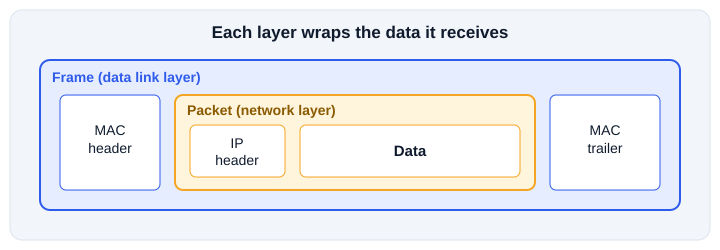

1. The parts of communication
Communication is the exchange of information between two or more parties. In a network the parties are devices: computers, phones, printers, servers, switches and routers.
- Sender: the device that starts the exchange.
- Receiver: the device the message is meant for.
- Message: the information being sent.
- Medium: the path it travels on, such as a cable or radio waves.
- Protocols: the rules both sides follow.
2. Network devices
| Device | Job | Uses |
|---|---|---|
| End device | Creates or receives data: PC, phone, printer, server | IP and MAC address |
| Switch | Connects devices inside one local network | MAC addresses |
| Router | Connects different networks and forwards packets between them | IP addresses |
| Access point | Gives wireless devices a way onto the wired network | Radio signals |
Two PCs in the same lab talk through a switch. A PC reaching a website on another network needs a router as well. Your home router usually combines a router, a switch and an access point in one box.
3. How data travels
Data does not cross a network as one large lump. It is split up and prepared, and each layer adds its own information, called a header, so the next device knows how to handle it. This is called encapsulation.
Packet and frame
| Packet | Frame | |
|---|---|---|
| Layer | Network layer | Data link layer |
| Addresses | Source and destination IP | Source and destination MAC |
| Used for | Getting across networks | Delivery on the local network |

4. IP and MAC addresses
A device has two addresses because they do different jobs.
| IP address | MAC address | |
|---|---|---|
| Example | 192.168.1.10 | 00E0.8F12.3456 |
| Size | 32 bits in IPv4, written as four decimal numbers | 48 bits, written in hexadecimal |
| Kind | Logical, can be changed | Hardware address on the interface |
| Works at | Network layer | Data link layer |
| Used for | Finding a destination across networks | Delivery inside one local network |
If PC0 is 192.168.1.10 and PC1 is 192.168.1.20 with subnet mask 255.255.255.0, they are on the same IPv4 network.
5. Protocols
A protocol is a set of rules for communicating. Without shared rules, devices from different makers could not understand each other.
| Protocol | What it does |
|---|---|
| IP | Addressing and delivery of packets between networks |
| TCP | Reliable, connection based delivery |
| UDP | Faster, connectionless delivery with less overhead |
| ICMP | Control and error messages, used by ping |
| ARP | Finds the MAC address for a known IPv4 address |
| DHCP | Gives devices their IP settings automatically |
| DNS | Turns names such as example.com into IP addresses |
6. ICMP and ping
Ping sends an ICMP echo request to a destination. If the destination is reachable and allowed to answer, it sends back an echo reply.
A successful ping is good evidence that the path works. A failed ping does not always mean a broken cable. A firewall, a wrong setting, a routing problem or disabled ICMP replies can cause it too.
See this in practice in Lab Exercise 1.
7. ARP
PC0 knows PC1 has the IP address 192.168.1.20, but the Ethernet frame needs a MAC address. PC0 asks the whole local network: who has 192.168.1.20? That question is an ARP request and it is broadcast. The owner replies with its MAC address in an ARP reply.
8. Switching
A switch keeps a MAC address table: each MAC address it has learned and the port it was learned on.
- Learning: when a frame arrives, the switch records the source MAC address against the arrival port.
- Known destination: the frame is sent out of the matching port only.
- Unknown destination: the frame is flooded out of every port except the one it came in on. The reply then teaches the switch the missing address.
Watch the table fill up in Lab Exercise 2.
9. Real devices
Packet Tracer simulates real equipment: the PC is a computer, the 2960 is an Ethernet switch, the router is a physical router and the wireless device is an access point. Straight through copper cable is an ordinary Ethernet cable.
Photos and descriptions of each real device, including cables, are covered in Module 2, where network components are the main topic.
10. Quick check
Which device connects different networks?
A router, using IP addresses.
Why does a device need both an IP and a MAC address?
The IP address finds the destination across networks. The MAC address delivers the frame inside the local network.
What does ARP do?
It finds the MAC address that belongs to a known IPv4 address on the local network.
What does a switch do with a frame whose destination it does not know?
It floods it out of every port except the one it arrived on.
Does a failed ping always mean the cable is broken?
No. Firewalls, settings, routing or disabled ICMP replies can also cause it.